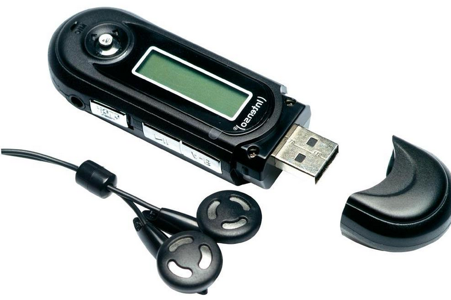
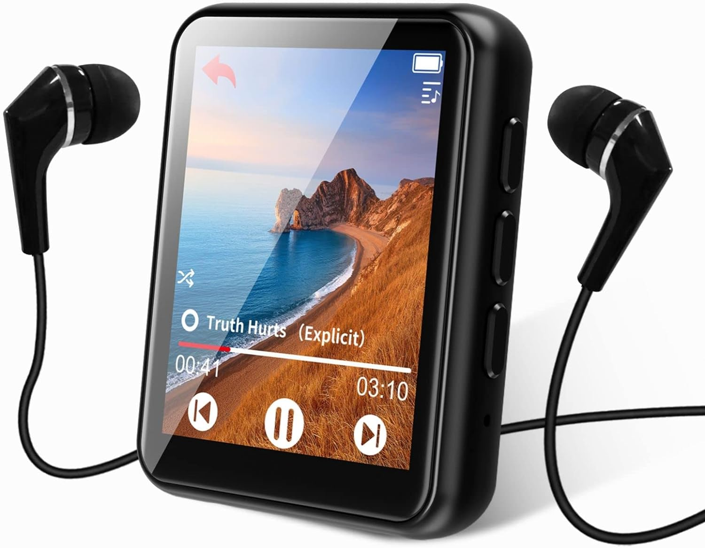

|

MP3 mini |

MP3 grande |
||||||
|---|---|---|---|---|---|---|---|
| Capacidad de almacenamiento | 4GB (1000 canciones) | 8GB (2000 canciones) | 16GB (4000 canciones) | 30GB (7500 canciones) | 80GB (20000 canciones) | ||
| colores | |||||||
| Pantalla | LCD de 3cm (diagonal) con retroiluminación | LCD de 6cm (diagonal) con retroiluminación | |||||
| Tiempo de carga | Unas 3 horas | Unas 4 horas | |||||
| Unas 2 horas para alcanzar el 80% de la capacidad | |||||||